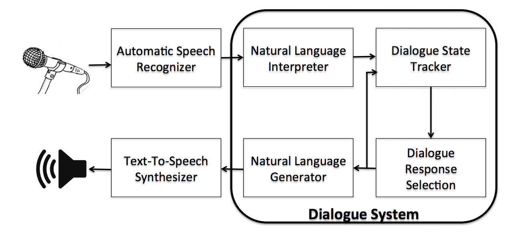

ArXiv, 2017
A Survey of Available Corpora for Building Data-Driven Dialogue Systems

A basic outline of a dialog system.
Abstract
During the past decade, several areas of speech and language understanding have witnessed substantial breakthroughs from the use of data-driven models. In the area of dialogue systems, the trend is less obvious, and most practical systems are still built through significant engineering and expert knowledge. Nevertheless, several recent results suggest that data-driven approaches are feasible and quite promising. To facilitate research in this area, we have carried out a wide survey of publicly available datasets suitable for data-driven learning of dialogue systems. We discuss important characteristics of these datasets, how they can be used to learn diverse dialogue strategies, and their other potential uses. We also examine methods for transfer learning between datasets and the use of external knowledge. Finally, we discuss appropriate choice of evaluation metrics for the learning objective.
Materials
Acknowledgements
The authors gratefully acknowledge financial support by the Samsung Advanced Institute of Technology (SAIT), the Natural Sciences and Engineering Research Council of Canada (NSERC), the Canada Research Chairs, the Canadian Institute for Advanced Research (CIFAR) and Compute Canada. Early versions of the manuscript benefited greatly from the proofreading of Melanie Lyman-Abramovitch, and later versions were extensively revised by Genevieve Fried and Nicolas Angelard-Gontier. The authors also thank Nissan Pow, Michael Noseworthy, Chia-Wei Liu, Gabriel Forgues, Alessandro Sordoni, Yoshua Bengio and Aaron Courville for helpful discussions.
Citation

References
- [12006Aarts and Wallis]
-
B. Aarts and S. A. Wallis. The diachronic corpus of present-day spoken english (DCPSE), 2006.
- [22016Abbott et al.Abbott, Ecker, Anand, and Walker]
-
Robert Abbott, Brian Ecker, Pranav Anand, and Marilyn Walker. Internet argument corpus 2.0: An sql schema for dialogic social media and the corpora to go with it. In Language Resources and Evaluation Conference, LREC2016, 2016.
- [32012Afantenos et al.Afantenos, Asher, Benamara, Cadilhac, Dégremont, Denis, Guhe, Keizer, Lascarides, Lemon, et al.]
-
S. Afantenos, N. Asher, F. Benamara, A. Cadilhac, Cédric Dégremont, P. Denis, M. Guhe, S. Keizer, A. Lascarides, O. Lemon, et al. Developing a corpus of strategic conversation in the settlers of catan. In SeineDial 2012-The 16th workshop on the semantics and pragmatics of dialogue, 2012.
- [42000Al-Onaizan et al.Al-Onaizan, Germann, Hermjakob, Knight, Koehn, M., and Yamada]
-
Y. Al-Onaizan, U. Germann, U. Hermjakob, K. Knight, P. Koehn, D. M., and K. Yamada. Translating with scarce resources. In AAAI, 2000.
- [52013Ameixa and Coheur]
-
D. Ameixa and L. Coheur. From subtitles to human interactions: introducing the subtle corpus. Technical report, Tech. rep., 2013.
- [61991Anderson et al.Anderson, Bader, Bard, Boyle, Doherty, Garrod, Isard, Kowtko, McAllister, Miller, et al.]
-
A. H. Anderson, M. Bader, E. G. Bard, E. Boyle, G. Doherty, S. Garrod, S. Isard, J. Kowtko, J. McAllister, J. Miller, et al. The HCRC map task corpus. Language and speech, 34 (4): 351-366, 1991.
- [72012Andreas et al.Andreas, Rosenthal, and McKeown]
-
Jacob Andreas, Sara Rosenthal, and Kathleen McKeown. Annotating agreement and disagreement in threaded discussion. In LREC, pages 818-822. Citeseer, 2012.
- [82016Asri et al.Asri, He, and Suleman]
-
L. E. Asri, J. He, and K. Suleman. A sequence-to-sequence model for user simulation in spoken dialogue systems. arXiv preprint arXiv:1607.00070, 2016.
- [92013Aubrey et al.Aubrey, Marshall, Rosin, Vandeventer, Cunningham, and Wallraven]
-
A. J. Aubrey, D. Marshall, P. L. Rosin, J. Vandeventer, D. W. Cunningham, and C. Wallraven. Cardiff conversation database (CCDb): A database of natural dyadic conversations. In Computer Vision and Pattern Recognition Workshops (CVPRW), IEEE Conference on, pages 277-282, 2013.
- [101995Aust et al.Aust, Oerder, Seide, and Steinbiss]
-
H. Aust, M. Oerder, F. Seide, and V. Steinbiss. The philips automatic train timetable information system. Speech Communication, 17 (3): 249-262, 1995.
- [112012Banchs]
-
R. E. Banchs. Movie-DiC: a movie dialogue corpus for research and development. In Proceedings of the 50th Annual Meeting of the Association for Computational Linguistics: Short Papers, 2012.
- [122012Banchs and Li]
-
R. E. Banchs and H. Li. IRIS: a chat-oriented dialogue system based on the vector space model. In Proceedings of the ACL 2012 System Demonstrations, 2012.
- [132005Banerjee and Lavie]
-
S. Banerjee and A. Lavie. METEOR: An automatic metric for mt evaluation with improved correlation with human judgments. In Proceedings of the ACL workshop on intrinsic and extrinsic evaluation measures for machine translation and/or summarization, 2005.
- [142000Barlow]
-
M. Barlow. Corpus of spoken, professional american-english, 2000.
- [151999Beare and Scott]
-
J. Beare and B. Scott. The spoken corpus of the survey of english dialects: language variation and oral history. In Proceedings of ALLC/ACH, 1999.
- [162003Bengio et al.Bengio, Ducharme, Vincent, and Janvin]
-
Y. Bengio, R. Ducharme, P. Vincent, and C. Janvin. A neural probabilistic language model. The Journal of Machine Learning Research, 3: 1137-1155, 2003.
- [172014Bengio et al.Bengio, Goodfellow, and Courville]
-
Y. Bengio, I. Goodfellow, and A. Courville. Deep learning. An MIT Press book in preparation. Draft chapters available at http://www. iro. umontreal. ca/ bengioy/dlbook, 2014.
- [182002Bennett and Rudnicky]
-
C. Bennett and A. I Rudnicky. The carnegie mellon communicator corpus, 2002.
- [191986Biber and Finegan]
-
D. Biber and E. Finegan. An initial typology of english text types. Corpus linguistics II: New studies in the analysis and exploitation of computer corpora, pages 19-46, 1986.
- [202001Biber and Finegan]
-
D. Biber and E. Finegan. Diachronic relations among speech-based and written registers in english. Variation in English: multi-dimensional studies, pages 66-83, 2001.
- [212008Bohus and Rudnicky]
-
D. Bohus and A. I Rudnicky. Sorry, I didn’t catch that! In Recent Trends in Discourse and Dialogue, pages 123-154. Springer, 2008.
- [Braley and Murray]
-
M. Braley and G. Murray. The Group Affect and Performance (GAP) Corpus. Proceedings of the ICMI Workshop on Group Interaction Frontiers in Technology, 2018.
- [222013Brennan et al.Brennan, Schuhmann, and Batres]
-
S. E. Brennan, K. S. Schuhmann, and K. M. Batres. Entrainment on the move and in the lab: The walking around corpus. In Proceedings of the 35th Annual Conference of the Cognitive Science Society, 2013.
- [231984Brown et al.Brown, Anderson, Shillcock, and Yule]
-
G. Brown, A. Anderson, R. Shillcock, and G. Yule. Teaching talk. Cambridge: CUP, 1984.
- [242000Burger et al.Burger, Weilhammer, Schiel, and Tillmann]
-
Susanne Burger, Karl Weilhammer, Florian Schiel, and Hans G Tillmann. Verbmobil data collection and annotation. In Verbmobil: Foundations of speech-to-speech translation, pages 537-549. Springer, 2000.
- [251999Cahn and Brennan]
-
J. E. Cahn and S. E. Brennan. A psychological model of grounding and repair in dialog. In AAAI Symposium on Psychological Models of Communication in Collaborative Systems, 1999.
- [261996Canavan and Zipperlen]
-
A. Canavan and G. Zipperlen. Callfriend american english-non-southern dialect. Linguistic Data Consortium, 10: 1, 1996.
- [271997Canavan et al.Canavan, Graff, and Zipperlen]
-
A. Canavan, D. Graff, and G. Zipperlen. Callhome american english speech. Linguistic Data Consortium, 1997.
- [281983Card et al.Card, Moran, and Newell]
-
S. K. Card, T. P. Moran, and A. Newell. The Psychology of Human-Computer Interaction. L. Erlbaum Associates Inc., Hillsdale, NJ, USA, 1983. ISBN 0898592437.
- [291998Carter]
-
R. Carter. Orders of reality: Cancode, communication, and culture. ELT journal, 52 (1): 43-56, 1998.
- [302006Carter and McCarthy]
-
R. Carter and M. McCarthy. Cambridge grammar of English: a comprehensive guide; spoken and written English grammar and usage. Ernst Klett Sprachen, 2006.
- [311999Chartrand and Bargh]
-
Tanya L. Chartrand and J. A. Bargh. The chameleon effect: the perception-behavior link and social interaction. Journal of personality and social psychology, 76 (6): 893, 1999.
- [322013Chen and Kan]
-
T. Chen and M. Kan. Creating a live, public short message service corpus: the nus sms corpus. Language Resources and Evaluation, 47 (2): 299-335, 2013.
- [332016Chen et al.Chen, Hakkani-Tür, and He]
-
Y.-N. Chen, D. Hakkani-Tür, and X. He. Zero-shot learning of intent embeddings for expansion by convolutional deep structured semantic models. In Acoustics, Speech and Signal Processing (ICASSP), 2016 IEEE International Conference on, pages 6045-6049. IEEE, 2016.
- [341991Clark and Brennan]
-
H. H. Clark and S. E. Brennan. Grounding in communication. Perspectives on socially shared cognition, 13: 127-149, 1991.
- [352005Cohen]
-
P. R. Cohen. If not turing's test, then what? AI magazine, 26 (4): 61, 2005.
- [361981Colby]
-
K. M. Colby. Modeling a paranoid mind. Behavioral and Brain Sciences, 4: 515-534, 1981.
- [371974Cooper]
-
R. M. Cooper. The control of eye fixation by the meaning of spoken language: A new methodology for the real-time investigation of speech perception, memory, and language processing. Cognitive Psychology, 6 (1): 84-107, 1974.
- [382000Cristianini and Shawe-Taylor]
-
N. Cristianini and J. Shawe-Taylor. An Introduction to Support Vector Machines: And Other Kernel-based Learning Methods. Cambridge University Press, 2000.
- [392015Cuayáhuitl et al.Cuayáhuitl, Keizer, and Lemon]
-
H. Cuayáhuitl, S. Keizer, and O. Lemon. Strategic dialogue management via deep reinforcement learning. arXiv preprint arXiv:1511.08099, 2015.
- [402011Danescu-Niculescu-Mizil and Lee]
-
C. Danescu-Niculescu-Mizil and L. Lee. Chameleons in imagined conversations: A new approach to understanding coordination of linguistic style in dialogs. In Proceedings of the Workshop on Cognitive Modeling and Computational Linguistics, ACL, 2011.
- [412012Daubigney et al.Daubigney, Geist, Chandramohan, and Pietquin]
-
L. Daubigney, M. Geist, S. Chandramohan, and O. Pietquin. A comprehensive reinforcement learning framework for dialogue management optimization. IEEE Journal of Selected Topics in Signal Processing, 6 (8): 891-902, 2012.
- [422012aDavies]
-
M. Davies. Comparing the corpus of american soap operas, COCA, and the BNC, 2012a.
- [432012bDavies]
-
M. Davies. Corpus of american soap operas, 2012b.
- [442013de Kok et al.de Kok, Heylen, and Morency]
-
I. de Kok, D. Heylen, and L. Morency. Speaker-adaptive multimodal prediction model for listener responses. In Proceedings of the 15th ACM on International conference on multimodal interaction, 2013.
- [452013Deng and Li]
-
L. Deng and X. Li. Machine learning paradigms for speech recognition: An overview. Audio, Speech, and Language Processing, IEEE Transactions on, 21 (5): 1060-1089, 2013.
- [462007Denoyer and Gallinari]
-
L. Denoyer and P. Gallinari. The wikipedia xml corpus. In Comparative Evaluation of XML Information Retrieval Systems, pages 12-19. Springer, 2007.
- [472016Dhingra et al.Dhingra, Zhou, Fitzpatrick, Muehl, and Cohen]
-
B. Dhingra, Z. Zhou, D. Fitzpatrick, M. Muehl, and W. Cohen. Tweet2vec: Character-based distributed representations for social media. arXiv preprint arXiv:1605.03481, 2016.
- [482012Djalali et al.Djalali, Lauer, and Potts]
-
A. Djalali, S. Lauer, and C. Potts. Corpus evidence for preference-driven interpretation. In Logic, Language and Meaning, pages 150-159. Springer, 2012.
- [492015Dodge et al.Dodge, Gane, Zhang, Bordes, Chopra, Miller, Szlam, and Weston]
-
J. Dodge, A. Gane, X. Zhang, A. Bordes, S. Chopra, A. Miller, A. Szlam, and J. Weston. Evaluating prerequisite qualities for learning end-to-end dialog systems. arXiv preprint arXiv:1511.06931, 2015.
- [502013Dose]
-
S. Dose. Flipping the script: A corpus of american television series (cats) for corpus-based language learning and teaching. Corpus Linguistics and Variation in English: Focus on Non-native Englishes, 2013.
- [512007Douglas-Cowie et al.Douglas-Cowie, Cowie, Sneddon, Cox, Lowry, Mcrorie, Martin, Devillers, Abrilian, Batliner, et al.]
-
E. Douglas-Cowie, R. Cowie, I. Sneddon, C. Cox, O. Lowry, M. Mcrorie, J. Martin, L. Devillers, S. Abrilian, A. Batliner, et al. The humaine database: addressing the collection and annotation of naturalistic and induced emotional data. In Affective computing and intelligent interaction, pages 488-500. Springer, 2007.
- [521997Eckert et al.Eckert, Levin, and Pieraccini]
-
W. Eckert, E. Levin, and R. Pieraccini. User modeling for spoken dialogue system evaluation. In Automatic Speech Recognition and Understanding, 1997. Proceedings., 1997 IEEE Workshop on, pages 80-87, 1997.
- [532017El Asri et al.El Asri, Schulz, Sharma, Zumer, Harris, Fine, Mehrotra, and Suleman]
-
L. El Asri, H. Schulz, S. Sharma, J. Zumer, J. Harris, E. Fine, R. Mehrotra, and K. Suleman. Frames: Acorpus for adding memory to goal-oriented dialogue systems. preprint on webpage at http://www.maluuba.com/publications/, 2017.
- [Eric and Manning, 2017]
-
M. Eric, C.D. Manning. Key-Value Retrieval Networks for Task-Oriented Dialogue. arXiv preprint arXiv:1705.05414, 2017.
- [Budzianowski, Wen, Tseng, Casanueva, Ultes, Ramadan and Gasic, 2018]
-
P. Budzianowski, T-H. Wen, B-H. Tseng, I. Casanueva, S. Ultes, O. Ramadan, M. Gasic. MultiWOZ - A Large-Scale Multi-Domain Wizard-of-Oz Dataset for Task-Oriented Dialogue Modelling. arXiv preprint arXiv:1810.00278. 2018.
- [542008Elsner and Charniak]
-
M. Elsner and E. Charniak. You talking to me? a corpus and algorithm for conversation disentanglement. In Association for Computational Linguistics (ACL), 2008.
- [552010Erhan et al.Erhan, Bengio, Courville, Manzagol, and Vincent]
-
D. Erhan, Y. Bengio, A. Courville, Pierre-A. Manzagol, and P. Vincent. Why does unsupervised pre-training help deep learning? Journal of Machine Learning Research, 11, 2010.
- [562004Fabbrizio et al.Fabbrizio, Tur, and Hakkani-Tür]
-
G. Di Fabbrizio, G. Tur, and D. Hakkani-Tür. Bootstrapping spoken dialog systems with data reuse. In SIGDIAL, 2004.
- [572016Fatemi et al.Fatemi, Asri, Schulz, He, and Suleman]
-
M. Fatemi, L. E. Asri, H. Schulz, J. He, and K. Suleman. Policy networks with two-stage training for dialogue systems. In Special Interest Group on Discourse and Dialogue (SIGDIAL), 2016.
- [582006Fisher et al.Fisher, Smith, and Welser]
-
D. Fisher, M. Smith, and H. T Welser. You are who you talk to: Detecting roles in usenet newsgroups. In Proceedings of the 39th Annual Hawaii International Conference on System Sciences (HICSS'06), volume 3, pages 59b-59b, 2006.
- [592009Forchini]
-
P. Forchini. Spontaneity reloaded: American face-to-face and movie conversation compared. In Corpus Linguistics, 2009.
- [602012Forchini]
-
P. Forchini. Movie language revisited. Evidence from multi-dimensional analysis and corpora. Peter Lang, 2012.
- [612014Forgues et al.Forgues, Pineau, Larchevêque, and Tremblay]
-
G. Forgues, J. Pineau, J. Larchevêque, and R. Tremblay. Bootstrapping dialog systems with word embeddings. In Workshop on Modern Machine Learning and Natural Language Processing, Advances in neural information processing systems (NIPS), 2014.
- [622007Forsyth and Martell]
-
E. N. Forsyth and C. H. Martell. Lexical and discourse analysis of online chat dialog. In International Conference on Semantic Computing (ICSC)., pages 19-26, 2007.
- [632015Galley et al.Galley, Brockett, Sordoni, Ji, Auli, Quirk, Mitchell, Gao, and Dolan]
-
M. Galley, C. Brockett, A. Sordoni, Y. Ji, M. Auli, C. Quirk, M. Mitchell, J. Gao, and B. Dolan. deltaBLEU: A discriminative metric for generation tasks with intrinsically diverse targets. In Proceedings of the 53rd Annual Meeting of the Association for Computational Linguistics and the 7th International Joint Conference on Natural Language Processing of the Asian Federation of Natural Language Processing, ACL, pages 445-450, 2015.
- [642010Gasi\'c et al.Gasi\'c, Jurcícek, Keizer, Mairesse, Thomson, Yu, and Young]
-
M. Gasi\'c, F. Jurcícek, S. Keizer, F. Mairesse, B. Thomson, K. Yu, and S. Young. Gaussian processes for fast policy optimisation of pomdp-based dialogue managers. In Proceedings of the 11th Annual Meeting of the Special Interest Group on Discourse and Dialogue, pages 201-204. Association for Computational Linguistics, 2010.
- [652011Gasi\'c et al.Gasi\'c, Jurcícek, Thomson, Yu, and Young]
-
M. Gasi\'c, F. Jurcícek, B. Thomson, K. Yu, and S. Young. On-line policy optimisation of spoken dialogue systems via live interaction with human subjects. In IEEE Workshop on Automatic Speech Recognition and Understanding (ASRU), pages 312-317. IEEE, 2011.
- [662012Gasi\'c et al.Gasi\'c, Henderson, Thomson, Tsiakoulis, and Young]
-
M. Gasi\'c, M. Henderson, B. Thomson, P. Tsiakoulis, and S. Young. Policy optimisation of pomdp-based dialogue systems without state space compression. In Spoken Language Technology Workshop (SLT), 2012 IEEE, pages 31-36. IEEE, 2012.
- [672013Gasic et al.Gasic, Breslin, Henderson, Kim, Szummer, Thomson, Tsiakoulis, and Young]
-
M. Gasic, C. Breslin, M. Henderson, D. Kim, M. Szummer, B. Thomson, P. Tsiakoulis, and S. Young. On-line policy optimisation of Bayesian spoken dialogue systems via human interaction. In IEEE International Conference on Acoustics, Speech and Signal Processing, pages 8367-8371, 2013.
- [682016Gasi\'c et al.Gasi\'c, Mrksi\'c, Rojas-Barahona, Su, Ultes, Vandyke, Wen, and Young]
-
M. Gasi\'c, N. Mrksi\'c, L. M. Rojas-Barahona, P.-H. Su, S. Ultes, D. Vandyke, T.-H. Wen, and S. Young. Dialogue manager domain adaptation using gaussian process reinforcement learning. Computer Speech & Language, 2016.
- [692016Genevay and Laroche]
-
A. Genevay and R. Laroche. Transfer learning for user adaptation in spoken dialogue systems. In Proceedings of the 2016 International Conference on Autonomous Agents & Multiagent Systems, pages 975-983. International Foundation for Autonomous Agents and Multiagent Systems, 2016.
- [702006Georgila et al.Georgila, Henderson, and Lemon]
-
K. Georgila, J. Henderson, and O. Lemon. User simulation for spoken dialogue systems: learning and evaluation. In Proceedings of INTERSPEECH, 2006.
- [712010Georgila et al.Georgila, Wolters, Moore, and Logie]
-
K. Georgila, M. Wolters, J. D. Moore, and R. H. Logie. The MATCH corpus: A corpus of older and younger users’ interactions with spoken dialogue systems. Language Resources and Evaluation, 44 (3): 221-261, 2010.
- [721963Gibson and Pick]
-
J. Gibson and A. D. Pick. Perception of another person's looking behavior. The American journal of psychology, 76 (3): 386-394, 1963.
- [731992Godfrey et al.Godfrey, Holliman, and McDaniel]
-
J. J Godfrey, E. C Holliman, and J McDaniel. SWITCHBOARD: Telephone speech corpus for research and development. In International Conference on Acoustics, Speech, and Signal Processing (ICASSP-92), 1992.
- [742015Goodfellow et al.Goodfellow, Courville, and Bengio]
-
I. Goodfellow, A. Courville, and Y. Bengio. Deep learning. Book in preparation for MIT Press, 2015. URL http://goodfeli.github.io/dlbook/.
- [751981Goodwin]
-
C. Goodwin. Conversational Organization: Interaction Between Speakers and Hearers. New York: Academic Press, 1981.
- [761997Gorin et al.Gorin, Riccardi, and Wright]
-
A. L. Gorin, G. Riccardi, and J. H. Wright. How may I help you? Speech Communication, 23 (1): 113-127, 1997.
- [762007Gratch]
-
J. Gratch, N. Wang, J. Gerten, E. Fast, and R. Duffy. Creating Rapport with Virtual Agents. 7th International Conference on Intelligent Virtual Agents, Paris, France 2007.
- [772012Graves]
-
A. Graves. Sequence transduction with recurrent neural networks. In Proceedings of the 29th International Conference on Machine Learning (ICML), Representation Learning Workshop, 2012.
- [782014Graves et al.Graves, Wayne, and Danihelka]
-
A. Graves, G. Wayne, and I. Danihelka. Neural turing machines. arXiv preprint arXiv:1410.5401, 2014.
- [791996Greenbaum]
-
S. Greenbaum. Comparing English worldwide: The international corpus of English. Clarendon Press, 1996.
- [801996Greenbaum and Nelson]
-
S. Greenbaum and G Nelson. The international corpus of english (ICE) project. World Englishes, 15 (1): 3-15, 1996.
- [812015Gülçehre et al.Gülçehre, Firat, Xu, Cho, Barrault, Lin, Bougares, Schwenk, and Bengio]
-
C. Gülçehre, O. Firat, K. Xu, K. Cho, L. Barrault, H. Lin, F. Bougares, H. Schwenk, and Y. Bengio. On using monolingual corpora in neural machine translation. CoRR, abs/1503.03535, 2015.
- [822004Gurevych and Strube]
-
I. Gurevych and M. Strube. Semantic similarity applied to spoken dialogue summarization. In Proceedings of the 20th international conference on Computational Linguistics, 2004.
- [831995Haslerud and Stenström]
-
V. Haslerud and A. Stenström. The bergen corpus of london teenager language (COLT). Spoken English on Computer. Transcription, Mark-up and Application. London: Longman, pages 235-242, 1995.
- [841995Heeman and Allen]
-
Peter A Heeman and James F Allen. The trains 93 dialogues. Technical report, DTIC Document, 1995.
- [851990Hemphill et al.Hemphill, Godfrey, and Doddington]
-
C. T. Hemphill, J. J. Godfrey, and G. R. Doddington. The atis spoken language systems pilot corpus. In Proceedings of the DARPA speech and natural language workshop, pages 96-101, 1990.
- [862013Henderson et al.Henderson, Thomson, and Young]
-
M. Henderson, B. Thomson, and S. Young. Deep neural network approach for the dialog state tracking challenge. In Special Interest Group on Discourse and Dialogue (SIGDIAL), 2013.
- [872014aHenderson et al.Henderson, Thomson, and Williams]
-
M. Henderson, B. Thomson, and J. Williams. Dialog state tracking challenge 2 & 3, 2014a.
- [882014bHenderson et al.Henderson, Thomson, and Williams]
-
M. Henderson, B. Thomson, and J. Williams. The second dialog state tracking challenge. In SIGDIAL, 2014b.
- [892014cHenderson et al.Henderson, Thomson, and Young]
-
M. Henderson, B. Thomson, and S. Young. Word-based dialog state tracking with recurrent neural networks. In 15th Special Interest Group on Discourse and Dialogue (SIGDIAL), page 292, 2014c.
- [902012Hinton et al.Hinton, Deng, Yu, Dahl, Mohamed, Jaitly, Senior, Vanhoucke, Nguyen, Sainath, et al.]
-
G. Hinton, L. Deng, D. Yu, G. E. Dahl, A. Mohamed, N. Jaitly, A. Senior, V. Vanhoucke, P. Nguyen, T.a N. Sainath, et al. Deep neural networks for acoustic modeling in speech recognition: The shared views of four research groups. Signal Processing Magazine, IEEE, 29 (6): 82-97, 2012.
- [912016Hiraoka et al.Hiraoka, Neubig, Yoshino, Toda, and Nakamura]
-
T. Hiraoka, G. Neubig, K. Yoshino, T. Toda, and S. Nakamura. Active learning for example-based dialog systems. In Proc Intl Workshop on Spoken Dialog Systems, Saariselka, Finland, 2016.
- [922010Hung and Chittaranjan]
-
H. Hung and G. Chittaranjan. The IDIAP wolf corpus: exploring group behaviour in a competitive role-playing game. In Proceedings of the international conference on Multimedia, pages 879-882, 2010.
- [931998Hutchens and Alder]
-
J. L. Hutchens and M. D. Alder. Introducing MegaHAL. In Proceedings of the Joint Conferences on New Methods in Language Processing and Computational Natural Language Learning, 1998.
- [941988J. and D.]
-
Arne J. and Nils D. Talking to a computer is not like talking to your best friend. In Proceedings of The first Scandinivian Conference on Artificial Intelligence, 1988.
- [952009Jung et al.Jung, Lee, Kim, Jeong, and Lee]
-
S. Jung, C. Lee, K. Kim, M. Jeong, and G. G. Lee. Data-driven user simulation for automated evaluation of spoken dialog systems. Computer Speech & Language, 23 (4): 479-509, 2009.
- [962008Jurafsky and Martin]
-
D. Jurafsky and J. H. Martin. Speech and language processing, 2nd Edition. Prentice Hall, 2008.
- [972011Jurc cek et al.Jurc cek, Keizer, Gasic, Mairesse, Thomson, Yu, and Young]
-
F. Jurccek, S. Keizer, M. Gasic, F. Mairesse, B. Thomson, K. Yu, and S. Young. Real user evaluation of spoken dialogue systems using amazon mechanical turk. In Proceedings of INTERSPEECH, volume 11, 2011.
- [982015Kadlec et al.Kadlec, Schmid, and Kleindienst]
-
R. Kadlec, M. Schmid, and J. Kleindienst. Improved deep learning baselines for ubuntu corpus dialogs. Neural Information Processing Systems Workshop on Machine Learning for Spoken Language Understanding, 2015.
- [992015Kim et al.Kim, D’Haro, Banchs, Williams, and Henderson]
-
S. Kim, L. F. D’Haro, R. E. Banchs, J. Williams, and M. Henderson. Dialog state tracking challenge 4, 2015.
- [1002016Kim et al.Kim, D’Haro, Banchs, Williams, Henderson, and Yoshino]
-
S. Kim, L. F. D’Haro, R. E. Banchs, J. D. Williams, M. Henderson, and K. Yoshino. The fifth dialog state tracking challenge. In IEEE Spoken Language Technology Workshop (SLT), 2016.
- [1011997Konstan et al.Konstan, Miller, Maltz, Herlocker, Gordon, and Riedl]
-
J. A Konstan, B. N. Miller, D. Maltz, J. L. Herlocker, L. R. Gordon, and J. Riedl. Grouplens: applying collaborative filtering to usenet news. Communications of the ACM, 40 (3): 77-87, 1997.
- [1012018Koutsombogera and Vogel]
-
M. Koutsombogera and C. Vogel. Modeling Collaborative Multimodal Behavior in Group Dialogues: The MULTISIMO Corpus. 11th International Conference on Language Resources and Evaluation (LREC 2018), 2018.
- [1022015Kumar et al.Kumar, Irsoy, Su, Bradbury, English, Pierce, Ondruska, Gulrajani, and Socher]
-
A. Kumar, O. Irsoy, J. Su, J. Bradbury, R. English, B. Pierce, P. Ondruska, I. Gulrajani, and R. Socher. Ask me anything: Dynamic memory networks for natural language processing. Neural Information Processing Systems (NIPS), 2015.
- [1032006Kytö and Walker]
-
Merja Kytö and Terry Walker. Guide to A corpus of English dialogues 1560-1760. Acta Universitatis Upsaliensis, 2006.
- [1041998Langkilde and Knight]
-
I. Langkilde and K. Knight. Generation that exploits corpus-based statistical knowledge. In Proceedings of the 36th Annual Meeting of the Association for Computational Linguistics and 17th International Conference on Computational Linguistics-Volume 1, pages 704-710. Association for Computational Linguistics, 1998.
- [1051992Leech]
-
G. Leech. 100 million words of english: the british national corpus (BNC). Language Research, 28 (1): 1-13, 1992.
- [1061997Levin and Pieraccini]
-
E. Levin and R. Pieraccini. A stochastic model of computer-human interaction for learning dialogue strategies. In Eurospeech, volume 97, pages 1883-1886, 1997.
- [1071997Levin et al.Levin, Pieraccini, and Eckert]
-
E. Levin, R. Pieraccini, and W. Eckert. Learning dialogue strategies within the markov decision process framework. In Automatic Speech Recognition and Understanding, 1997. Proceedings., 1997 IEEE Workshop on, pages 72-79. IEEE, 1997.
- [1082015Li et al.Li, Galley, Brockett, Gao, and Dolan]
-
J. Li, M. Galley, C. Brockett, J. Gao, and B. Dolan. A diversity-promoting objective function for neural conversation models. arXiv preprint arXiv:1510.03055, 2015.
- [1092016Li et al.Li, Galley, Brockett, Gao, and D.]
-
J. Li, M. Galley, C. Brockett, J. Gao, and Bill D. A persona-based neural conversation model. In ACL, pages 994-1003, 2016.
- [1102011aLin and Walker]
-
G. Lin and M. Walker. All the world's a stage: Learning character models from film. In AAAI Conference on Artificial Intelligence and Interactive Digital Entertainment, 2011a.
- [1112011bLin and Walker]
-
G. I. Lin and M. A. Walker. All the world's a stage: Learning character models from film. In AIIDE, 2011b.
- [11142017bLi et al.]
-
Y. Li, H. Su, X. Shen, W. Li, Z. Cao, & S. Niu. DailyDialog: A Manually Labelled Multi-turn Dialogue Dataset. In
IJCNLP , 2017. - [1121974Lord and Haith]
-
C. Lord and M. Haith. The perception of eye contact. Attention, Perception, & Psychophysics, 16 (3): 413-416, 1974.
- [1132015aLowe et al.Lowe, Pow, Serban, and Pineau]
-
R. Lowe, N. Pow, I. Serban, and J. Pineau. The ubuntu dialogue corpus: A large dataset for research in unstructured multi-turn dialogue systems. In Special Interest Group on Discourse and Dialogue (SIGDIAL), 2015a.
- [1142015bLowe et al.Lowe, Pow, Serban, Charlin, and Pineau]
-
R. Lowe, N. Pow, I. V. Serban, L. Charlin, and J. Pineau. Incorporating unstructured textual knowledge sources into neural dialogue systems. Neural Information Processing Systems Workshop on Machine Learning for Spoken Language Understanding, 2015b.
- [1152016Lowe et al.Lowe, Serban, Noseworthy, Charlin, and Pineau]
-
R. Lowe, I. V. Serban, M. Noseworthy, L. Charlin, and J. Pineau. On the evaluation of dialogue systems with next utterance classification. In Special Interest Group on Discourse and Dialogue (SIGDIAL), 2016.
- [1162009Lucas et al.Lucas, Fernández, Salazar, Ferreiros, and Segundo]
-
J. M. Lucas, F. Fernández, J. Salazar, J. Ferreiros, and R. San Segundo. Managing speaker identity and user profiles in a spoken dialogue system. In Procesamiento del Lenguaje Natural, number 43 in 1, pages 77-84, 2009.
- [1171985MacWhinney and Snow]
-
B. MacWhinney and C. Snow. The child language data exchange system. Journal of child language, 12 (02): 271-295, 1985.
- [1182014Mairesse and Young]
-
F. Mairesse and S. Young. Stochastic language generation in dialogue using factored language models. Computational Linguistics, 2014.
- [1192010Mairesse et al.Mairesse, Gasi\'c, Jurcícek, Keizer, Thomson, Yu, and Young]
-
F. Mairesse, M. Gasi\'c, F. Jurcícek, S. Keizer, B. Thomson, K. Yu, and S. Young. Phrase-based statistical language generation using graphical models and active learning. In Proceedings of the 48th Annual Meeting of the Association for Computational Linguistics, pages 1552-1561. Association for Computational Linguistics, 2010.
- [1201999Manning and Schütze]
-
C. D. Manning and H. Schütze. Foundations of statistical natural language processing. MIT press, 1999.
- [1211998McCarthy]
-
M. McCarthy. Spoken language and applied linguistics. Ernst Klett Sprachen, 1998.
- [1221992McGlashan et al.McGlashan, Fraser, Gilbert, Bilange, Heisterkamp, and Youd]
-
S. McGlashan, N. Fraser, N. Gilbert, E. Bilange, P. Heisterkamp, and N. Youd. Dialogue management for telephone information systems. In Proceedings of the third conference on Applied natural language processing, pages 245-246. Association for Computational Linguistics, 1992.
- [1232010McKeown et al.McKeown, Valstar, Cowie, and Pantic]
-
G. McKeown, M. F Valstar, R. Cowie, and M. Pantic. The SEMAINE corpus of emotionally coloured character interactions. In Multimedia and Expo (ICME), 2010 IEEE International Conference on, pages 1079-1084, 2010.
- [1242010Mikolov et al.Mikolov, Karafiát, Burget, Cernock\`y, and Khudanpur]
-
T. Mikolov, M. Karafiát, L. Burget, J. Cernock\`y, and Sanjeev Khudanpur. Recurrent neural network based language model. In 11th Proceedings of INTERSPEECH, pages 1045-1048, 2010.
- [1252013Mikolov et al.Mikolov, Sutskever, Chen, Corrado, and Dean]
-
T. Mikolov, I. Sutskever, K. Chen, G. S. Corrado, and J. Dean. Distributed representations of words and phrases and their compositionality. In Advances in neural information processing systems, pages 3111-3119, 2013.
- [1261995Miller]
-
G. A. Miller. WordNet: a lexical database for english. Communications of the ACM, 38 (11): 39-41, 1995.
- [12752015Misra et al.]
-
A. Misra, P. Anand, J. E. F. Tree, M. Walker. Using Summarization to Discover Argument Facets in Online Idealogical Dialog. In
The North American Chapter of the Association for Computational Linguistics (NAACL) , 2015. - [1272016Mo et al.Mo, Li, Zhang, Li, and Yang]
-
K. Mo, S. Li, Y. Zhang, J. Li, and Q. Yang. Personalizing a dialogue system with transfer learning. arXiv preprint arXiv:1610.02891, 2016.
- [1282014Mohan and Laird]
-
S. Mohan and J. Laird. Learning goal-oriented hierarchical tasks from situated interactive instruction. In AAAI, 2014.
- [1292016Nguyen et al.Nguyen, Rosenberg, Song, Gao, Tiwary, Majumder, and Deng]
-
Tri Nguyen, Mir Rosenberg, Xia Song, Jianfeng Gao, Saurabh Tiwary, Rangan Majumder, and Li Deng. Ms marco: A human generated machine reading comprehension dataset. arXiv preprint arXiv:1611.09268, 2016.
- [1302014Nio et al.Nio, Sakti, Neubig, Toda, and Nakamura]
-
L Nio, S. Sakti, G. Neubig, T. Toda, and S. Nakamura. Conversation dialog corpora from television and movie scripts. In 17th Oriental Chapter of the International Committee for the Co-ordination and Standardization of Speech Databases and Assessment Techniques (COCOSDA), pages 1-4, 2014.
- [1312004Nöth et al.Nöth, Horndasch, Gallwitz, and Haas]
-
E. Nöth, A. Horndasch, F. Gallwitz, and J. Haas. Experiences with commercial telephone-based dialogue systems. it-Information Technology (vormals it+ ti), 46 (6/2004): 315-321, 2004.
- [1322013Oertel et al.Oertel, Cummins, Edlund, Wagner, and Campbell]
-
C. Oertel, F. Cummins, J. Edlund, P. Wagner, and N. Campbell. D64: A corpus of richly recorded conversational interaction. Journal on Multimodal User Interfaces, 7 (1-2): 19-28, 2013.
- [1332000Oh and Rudnicky]
-
A. H. Oh and A. I. Rudnicky. Stochastic language generation for spoken dialogue systems. In Proceedings of the 2000 ANLP/NAACL Workshop on Conversational systems-Volume 3, pages 27-32. Association for Computational Linguistics, 2000.
- [1342006Paek]
-
T. Paek. Reinforcement learning for spoken dialogue systems: Comparing strengths and weaknesses for practical deployment. In Proc. Dialog-on-Dialog Workshop, INTERSPEECH, 2006.
- [1352002Papineni et al.Papineni, Roukos, Ward, and Zhu]
-
K. Papineni, S. Roukos, T Ward, and W Zhu. BLEU: a method for automatic evaluation of machine translation. In Proceedings of the 40th annual meeting on Association for Computational Linguistics (ACL), 2002.
- [1362004Pargellis et al.Pargellis, Kuo, and Lee]
-
A. N. Pargellis, H-K. J. Kuo, and C. Lee. An automatic dialogue generation platform for personalized dialogue applications. Speech Communication, 42 (3-4): 329-351, 2004. doi: 10.1016/j.specom.2003.10.003.
- [1372014Passonneau and Sachar]
-
Rebecca Passonneau and Evaneet Sachar. Loqui human-human dialogue corpus (transcriptions and annotations). 2014.
- [1382011Perez-Marin and Pascual-Nieto]
-
D. Perez-Marin and I. Pascual-Nieto. Conversational Agents and Natural Language Interaction: Techniques and Effective Practices. IGI Global, 2011.
- [1392004Petrik]
-
S. Petrik. Wizard of Oz Experiments on Speech Dialogue Systems. PhD thesis, Citeseer, 2004.
- [1402009Pieraccini et al.Pieraccini, Suendermann, Dayanidhi, and Liscombe]
-
R. Pieraccini, D. Suendermann, K. Dayanidhi, and J. Liscombe. Are we there yet? research in commercial spoken dialog systems. In Text, Speech and Dialogue, pages 3-13, 2009.
- [1412013Pietquin and Hastie]
-
O. Pietquin and H. Hastie. A survey on metrics for the evaluation of user simulations. The knowledge engineering review, 28 (01): 59-73, 2013.
- [1422015Piot et al.Piot, Geist, and Pietquin]
-
B. Piot, M. Geist, and O. Pietquin. Imitation learning applied to embodied conversational agents. In 4th Workshop on Machine Learning for Interactive Systems (MLIS 2015), volume 43, 2015.
- [1432012Potts]
-
C. Potts. Goal-driven answers in the cards dialogue corpus. In Proceedings of the 30th west coast conference on formal linguistics, pages 1-20, 2012.
- [1442002Ratnaparkhi]
-
A. Ratnaparkhi. Trainable approaches to surface natural language generation and their application to conversational dialog systems. Computer Speech & Language, 16 (3): 435-455, 2002.
- [1452005Raux et al.Raux, Langner, Bohus, Black, and Eskenazi]
-
A. Raux, B. Langner, D. Bohus, A. W. Black, and M. Eskenazi. Let’s go public! taking a spoken dialog system to the real world. In Proceedings of INTERSPEECH. Citeseer, 2005.
- [1461997Reithinger and Klesen]
-
N. Reithinger and M. Klesen. Dialogue act classification using language models. In EuroSpeech, 1997.
- [1472013Ren et al.Ren, Xu, Zhang, and Yan]
-
H. Ren, W. Xu, Y. Zhang, and Y. Yan. Dialog state tracking using conditional random fields. In Special Interest Group on Discourse and Dialogue (SIGDIAL), 2013.
- [1482007Renals et al.Renals, Hain, and Bourlard]
-
S. Renals, T. Hain, and H. Bourlard. Recognition and understanding of meetings the AMI and AMIDA projects. In IEEE Workshop on Automatic Speech Recognition & Understanding (ASRU), 2007.
- [1492004Reppen and Ide]
-
R. Reppen and N. Ide. The american national corpus overall goals and the first release. Journal of English Linguistics, 32 (2): 105-113, 2004.
- [1501999Rickel and Johnson]
-
Jeff Rickel and W Lewis Johnson. Animated agents for procedural training in virtual reality: Perception, cognition, and motor control. Applied artificial intelligence, 13 (4-5): 343-382, 1999.
- [1512010Rieser and Lemon]
-
V. Rieser and O. Lemon. Natural language generation as planning under uncertainty for spoken dialogue systems. In Empirical methods in natural language generation, pages 105-120. Springer, 2010.
- [1522010Ritter et al.Ritter, Cherry, and Dolan]
-
A. Ritter, C. Cherry, and B. Dolan. Unsupervised modeling of twitter conversations. In North American Chapter of the Association for Computational Linguistics (NAACL), 2010.
- [1532011Ritter et al.Ritter, Cherry, and Dolan]
-
A. Ritter, C. Cherry, and W. B. Dolan. Data-driven response generation in social media. In Proceedings of the conference on Empirical Methods in Natural Language Processing, 2011.
- [1542015Rosenthal and McKeown]
-
Sara Rosenthal and Kathleen McKeown. I couldn’t agree more: The role of conversational structure in agreement and disagreement detection in online discussions. In 16th Annual Meeting of the Special Interest Group on Discourse and Dialogue, page 168, 2015.
- [1552006Rosset and Petel]
-
S. Rosset and S. Petel. The ritel corpus-an annotated human-machine open-domain question answering spoken dialog corpus. In The International Conference on Language Resources and Evaluation (LREC), 2006.
- [1562014Roy et al.Roy, Guinaudeau, Bredin, and Barras]
-
A. Roy, C. Guinaudeau, H. Bredin, and C. Barras. TVD: a reproducible and multiply aligned tv series dataset. In The International Conference on Language Resources and Evaluation (LREC), volume 2, 2014.
- [1572006Ruppenhofer et al.Ruppenhofer, Ellsworth, Petruck, Johnson, and Scheffczyk]
-
J. Ruppenhofer, M. Ellsworth, M. R.L. Petruck, C. R. Johnson, and J. Scheffczyk. FrameNet II: Extended Theory and Practice. International Computer Science Institute, 2006. Distributed with the FrameNet data.
-
J. Schatzmann and S. Young. The hidden agenda user simulation model. IEEE transactions on audio, speech, and language processing, 17 (4): 733-747, 2009.
- [1592005Schatzmann et al.Schatzmann, Georgila, and Young]
-
J. Schatzmann, K. Georgila, and S. Young. Quantitative evaluation of user simulation techniques for spoken dialogue systems. In 6th Special Interest Group on Discourse and Dialogue (SIGDIAL), 2005.
- [1602007Schatzmann et al.Schatzmann, Thomson, Weilhammer, Ye, and Young]
-
J. Schatzmann, B. Thomson, K. Weilhammer, . Ye, and S. Young. Agenda-based user simulation for bootstrapping a pomdp dialogue system. In Human Language Technologies 2007: The Conference of the North American Chapter of the Association for Computational Linguistics; Companion Volume, Short Papers, pages 149-152, 2007.
- [1612015Schrading]
-
J. N. Schrading. Analyzing domestic abuse using natural language processing on social media data. Master's thesis, Rochester Institute of Technology, United States, 2015. http://scholarworks.rit.edu/theses.
- [1622015Schrading et al.Schrading, Alm, Ptucha, and Homan]
-
N. Schrading, C. O. Alm, R. Ptucha, and C. M. Homan. An analysis of domestic a.se discourse on reddit. In Empirical Methods in Natural Language Processing (EMNLP), 2015.
- [1632005Schuler]
-
K. K. Schuler. VerbNet: A broad-coverage, comprehensive verb lexicon. PhD thesis, University of Pennsylvania, 2005. Paper AAI3179808.
- [1642015Serban and Pineau]
-
I. V. Serban and J. Pineau. Text-based speaker identification for multi-participant open-domain dialogue systems. Neural Information Processing Systems Workshop on Machine Learning for Spoken Language Understanding, 2015.
- [1652016Serban et al.Serban, Sordoni, Bengio, Courville, and Pineau]
-
I. V. Serban, A. Sordoni, Y. Bengio, A. Courville, and J. Pineau. Building End-To-End Dialogue Systems Using Generative Hierarchical Neural Networks. In AAAI, 2016. In press.
- [1662017aSerban et al.Serban, Klinger, Tesauro, Talamadupula, Zhou, Bengio, and Courville]
-
I. V. Serban, T. Klinger, G. Tesauro, K. Talamadupula, B. Zhou, Y. Bengio, and A. Courville. Multiresolution recurrent neural networks: An application to dialogue response generation. In AAAI Conference, 2017a.
- [1672017bSerban et al.Serban, Sordoni, Lowe, Charlin, Pineau, Courville, and Bengio]
-
I. V. Serban, A. Sordoni, R. Lowe, L. Charlin, J. Pineau, A. Courville, and Y. Bengio. A hierarchical latent variable encoder-decoder model for generating dialogues. In AAAI Conference, 2017b.
- [1682010Shaikh et al.Shaikh, Strzalkowski, Broadwell, Stromer-Galley, Taylor, and Webb]
-
S. Shaikh, T. Strzalkowski, G. A. Broadwell, J. Stromer-Galley, S. M. Taylor, and N. Webb. Mpc: A multi-party chat corpus for modeling social phenomena in discourse. In The International Conference on Language Resources and Evaluation (LREC), 2010.
- [1692015Shang et al.Shang, Lu, and Li]
-
L. Shang, Z. Lu, and H. Li. Neural responding machine for short-text conversation. arXiv preprint arXiv:1503.02364, 2015.
- [1702009Shaoul and Westbury]
-
C. Shaoul and C. Westbury. A usenet corpus (2005-2009), 2009.
- [1712016Sharma et al.Sharma, He, Suleman, Schulz, and Bachman]
-
S. Sharma, J. He, K. Suleman, H. Schulz, and P. Bachman. Natural language generation in dialogue using lexicalized and delexicalized data. arXiv preprint arXiv:1606.03632, 2016.
- [1722007aShawar and Atwell]
-
B. A. Shawar and E. Atwell. Different measurements metrics to evaluate a chatbot system. In Proceedings of the Workshop on Bridging the Gap: Academic and Industrial Research in Dialog Technologies, pages 89-96, 2007a.
- [1732007bShawar and Atwell]
-
B. A. Shawar and Eric Atwell. Chatbots: are they really useful? In LDV Forum, volume 22, pages 29-49, 2007b.
- [1742004Shriberg et al.Shriberg, Dhillon, Bhagat, Ang, and Carvey]
-
Elizabeth Shriberg, Raj Dhillon, Sonali Bhagat, Jeremy Ang, and Hannah Carvey. The icsi meeting recorder dialog act (mrda) corpus. Technical report, DTIC Document, 2004.
- [1751993Simpson and Eraser]
-
A. Simpson and N. M Eraser. Black box and glass box evaluation of the sundial system. In Third European Conference on Speech Communication and Technology, 1993.
- [1762002Singh et al.Singh, Litman, Kearns, and Walker]
-
S. Singh, D. Litman, M. Kearns, and M. Walker. Optimizing dialogue management with reinforcement learning: Experiments with the njfun system. Journal of Artificial Intelligence Research, pages 105-133, 2002.
- [1771999Singh et al.Singh, Kearns, Litman, and Walker]
-
S. P. Singh, M. J. Kearns, D. J. Litman, and M. A. Walker. Reinforcement learning for spoken dialogue systems. In Neural Information Processing Systems, 1999.
- [1782015Sordoni et al.Sordoni, Galley, Auli, Brockett, Ji, Mitchell, Nie, Gao, and Dolan]
-
A. Sordoni, M. Galley, M. Auli, C. Brockett, Y. Ji, M. Mitchell, J. Nie, J. Gao, and B. Dolan. A neural network approach to context-sensitive generation of conversational responses. In Conference of the North American Chapter of the Association for Computational Linguistics (NAACL-HLT 2015), 2015.
- [1792002Stenström et al.Stenström, Andersen, and Hasund]
-
A. Stenström, G. Andersen, and I. K. Hasund. Trends in teenage talk: Corpus compilation, analysis and findings, volume 8. J. Benjamins, 2002.
- [1802004Stent et al.Stent, Prasad, and Walker]
-
A. Stent, R. Prasad, and M. Walker. Trainable sentence planning for complex information presentation in spoken dialog systems. In Proceedings of the 42nd annual meeting on association for computational linguistics, page 79. Association for Computational Linguistics, 2004.
- [1812000Stolcke et al.Stolcke, Ries, Coccaro, Shriberg, Bates, Jurafsky, Taylor, Martin, Van Ess-Dykema, and Meteer]
-
A. Stolcke, K. Ries, N. Coccaro, E. Shriberg, R. Bates, D. Jurafsky, P. Taylor, R. Martin, C. Van Ess-Dykema, and M. Meteer. Dialogue act modeling for automatic tagging and recognition of conversational speech. Computational linguistics, 26 (3): 339-373, 2000.
- [1822013Su et al.Su, Wang, Yu, and Lee]
-
P.-H. Su, Y.-B. Wang, T.-H. Yu, and L.-S. Lee. A dialogue game framework with personalized training using reinforcement learning for computer-assisted language learning. In 2013 IEEE International Conference on Acoustics, Speech and Signal Processing, pages 8213-8217. IEEE, 2013.
- [1832015Su et al.Su, Vandyke, Gasic, Kim, Mrksic, Wen, and Young]
-
P.-H. Su, D. Vandyke, M. Gasic, D. Kim, N. Mrksic, T.-H. Wen, and S. Young. Learning from real users: Rating dialogue success with neural networks for reinforcement learning in spoken dialogue systems. In INTERSPEECH, 2015.
- [1842016Su et al.Su, Gasic, Mrksic, Rojas-Barahona, Ultes, Vandyke, Wen, and Young]
-
P.-H. Su, M. Gasic, N. Mrksic, L. Rojas-Barahona, S. Ultes, D. Vandyke, T.-H. Wen, and S. Young. Continuously learning neural dialogue management. arXiv preprint arXiv:1606.02689, 2016.
- [1852015Sukhbaatar et al.Sukhbaatar, Szlam, Weston, and Fergus]
-
S. Sukhbaatar, A. Szlam, J. Weston, and R. Fergus. End-to-end memory networks. In Neural Information Processing Systems (NIPS), 2015.
- [1862011Sun et al.Sun, Lichtenauer, Valstar, Nijholt, and Pantic]
-
X. Sun, J. Lichtenauer, M. Valstar, A. Nijholt, and M. Pantic. A multimodal database for mimicry analysis. In Affective Computing and Intelligent Interaction, pages 367-376. Springer, 2011.
- [1871990Svartvik]
-
J. Svartvik. The London-Lund corpus of spoken English: Description and research. Number 82 in 1. Lund University Press, 1990.
- [1882010Thomson and Young]
-
B. Thomson and S. Young. Bayesian update of dialogue state: A POMDP framework for spoken dialogue systems. Computer Speech & Language, 24 (4): 562-588, 2010.
- [1892012Tiedemann]
-
J. Tiedemann. Parallel data, tools and interfaces in opus. In The International Conference on Language Resources and Evaluation (LREC), 2012.
- [1902002Traum and Rickel]
-
David Traum and Jeff Rickel. Embodied agents for multi-party dialogue in immersive virtual worlds. In Proceedings of the first international joint conference on Autonomous agents and multiagent systems: part 2, pages 766-773. ACM, 2002.
- [1911950Turing]
-
A. M. Turing. Computing machinery and intelligence. Mind, pages 433-460, 1950.
- [1922013Uthus and Aha]
-
D. C Uthus and D. W Aha. The ubuntu chat corpus for multiparticipant chat analysis. In AAAI Spring Symposium: Analyzing Microtext, 2013.
- [1932015Vandeventer et al.Vandeventer, Aubrey, Rosin, and Marshall]
-
J. Vandeventer, A. J. Aubrey, P. L. Rosin, and D. Marshall. 4d cardiff conversation database (4D CCDb): A 4D database of natural, dyadic conversations. In Proceedings of the 1st Joint Conference on Facial Analysis, Animation and Auditory-Visual Speech Processing (FAAVSP 2015), 2015.
- [1942015Vandyke et al.Vandyke, Su, Gasic, Mrksic, Wen, and Young]
-
D. Vandyke, P.-H. Su, M. Gasic, N. Mrksic, T.-H. Wen, and S. Young. Multi-domain dialogue success classifiers for policy training. In Automatic Speech Recognition and Understanding (ASRU), 2015 IEEE Workshop on, pages 763-770. IEEE, 2015.
- [1952015Vinyals and Le]
-
O. Vinyals and Q. Le. A neural conversational model. arXiv preprint arXiv:1506.05869, 2015.
- [1961997Walker et al.Walker, Litman, Kamm, and Abella]
-
M. A. Walker, D. J. Litman, C. A. Kamm, and A. Abella. Paradise: A framework for evaluating spoken dialogue agents. In Proceedings of the eighth conference on European chapter of the Association for Computational Linguistics, pages 271-280, 1997.
- [1972002Walker et al.Walker, Rambow, and Rogati]
-
M. A. Walker, O. C. Rambow, and M. Rogati. Training a sentence planner for spoken dialogue using boosting. Computer Speech & Language, 16 (3): 409-433, 2002.
- [1982011Walker et al.Walker, Grant, Sawyer, Lin, Wardrip-Fruin, and Buell]
-
M. A. Walker, R. Grant, J. Sawyer, G. I. Lin, N. Wardrip-Fruin, and M. Buell. Perceived or not perceived: Film character models for expressive nlg. In ICIDS, pages 109-121, 2011.
- [1992012aWalker et al.Walker, Lin, and Sawyer]
-
M. A Walker, G. I. Lin, and J. Sawyer. An annotated corpus of film dialogue for learning and characterizing character style. In The International Conference on Language Resources and Evaluation (LREC), pages 1373-1378, 2012a.
- [2002012bWalker et al.Walker, Tree, Anand, Abbott, and King]
-
M. A Walker, J. E. F. Tree, P. Anand, R. Abbott, and J. King. A corpus for research on deliberation and debate. In The International Conference on Language Resources and Evaluation (LREC), pages 812-817, 2012b.
- [2012013Wang and Lemon]
-
Z. Wang and O. Lemon. A simple and generic belief tracking mechanism for the dialog state tracking challenge: On the believability of observed information. In Special Interest Group on Discourse and Dialogue (SIGDIAL), 2013.
- [2022010Webb]
-
S. Webb. A corpus driven study of the potential for vocabulary learning through watching movies. International Journal of Corpus Linguistics, 15 (4): 497-519, 2010.
- [2031966Weizenbaum]
-
J. Weizenbaum. ELIZA—a computer program for the study of natural language communication between man and machine. Communications of the ACM, 9 (1): 36-45, 1966.
- [2042015Wen et al.Wen, Gasic, Kim, Mrksic, Su, Vandyke, and Young]
-
T. Wen, M. Gasic, D. Kim, N. Mrksic, P. Su, D. Vandyke, and S. Young. Stochastic language generation in dialogue using recurrent neural networks with convolutional sentence reranking. Special Interest Group on Discourse and Dialogue (SIGDIAL), 2015.
- [2052016Wen et al.Wen, Gasic, Mrksic, Rojas-Barahona, Su, Vandyke, and Young]
-
T.-H. Wen, M. Gasic, N. Mrksic, L. M. Rojas-Barahona, P.-H. Su, D. Vandyke, and S. Young. Multi-domain neural network language generation for spoken dialogue systems. In NAACL HLT, 2016.
- [2062016Weston]
-
J. Weston. Dialog-based language learning. arXiv preprint arXiv:1604.06045, 2016.
- [2072015Weston et al.Weston, Chopra, and Bordes]
-
J. Weston, S. Chopra, and A. Bordes. Memory networks. In International Conference on Learning Representations (ICLR), 2015.
- [2082013Williams et al.Williams, Raux, Ramachandran, and Black]
-
J. Williams, A. Raux, D. Ramachandran, and A. Black. The dialog state tracking challenge. In Special Interest Group on Discourse and Dialogue (SIGDIAL), 2013.
- [2092007Williams and Young]
-
J. D. Williams and S. Young. Partially observable markov decision processes for spoken dialog systems. Computer Speech & Language, 21 (2): 393-422, 2007.
- [2102016Williams and Zweig]
-
J. D. Williams and G. Zweig. End-to-end lstm-based dialog control optimized with supervised and reinforcement learning. arXiv preprint arXiv:1606.01269, 2016.
- [2112004Wolska et al.Wolska, Vo, Tsovaltzi, Kruijff-Korbayová, Karagjosova, Horacek, Fiedler, and Benzmüller]
-
M. Wolska, Q. B. Vo, D. Tsovaltzi, I. Kruijff-Korbayová, E. Karagjosova, H. Horacek, A. Fiedler, and C. Benzmüller. An annotated corpus of tutorial dialogs on mathematical theorem proving. In The International Conference on Language Resources and Evaluation (LREC), 2004.
- [2122003Wrede and Shriberg]
-
Britta Wrede and Elizabeth Shriberg. Relationship between dialogue acts and hot spots in meetings. In Automatic Speech Recognition and Understanding, 2003. ASRU'03. 2003 IEEE Workshop on, pages 180-185. IEEE, 2003.
- [2132015Yang et al.Yang, Yih, and Meek]
-
Yi Yang, Wen-tau Yih, and Christopher Meek. Wikiqa: A challenge dataset for open-domain question answering. In EMNLP, pages 2013-2018. Citeseer, 2015.
- [2142010Yang et al.Yang, Li, Zhu, King, Levow, and Meng]
-
Z. Yang, B. Li, Y. Zhu, I. King, G. Levow, and H. Meng. Collection of user judgments on spoken dialog system with crowdsourcing. In Spoken Language Technology Workshop (SLT), 2010 IEEE, pages 277-282, 2010.
- [2152013Young et al.Young, Gasic, Thomson, and Williams]
-
S. Young, M. Gasic, B. Thomson, and J. D. Williams. POMDP-based statistical spoken dialog systems: A review. Proceedings of the IEEE, 101 (5): 1160-1179, 2013.
- [2162000Young]
-
S. J. Young. Probabilistic methods in spoken-dialogue systems. Philosophical Transactions of the Royal Society of London. Series A: Mathematical, Physical and Engineering Sciences, 358 (1769), 2000.
- [2172016Zhang et al.Zhang, Kumar, Ravi, and Danescu-Niculescu-Mizil]
- Justine Zhang, Ravi Kumar, Sujith Ravi, and Cristian Danescu-Niculescu-Mizil. Conversational flow in oxford-style debates. arXiv preprint arXiv:1604.03114, 2016.